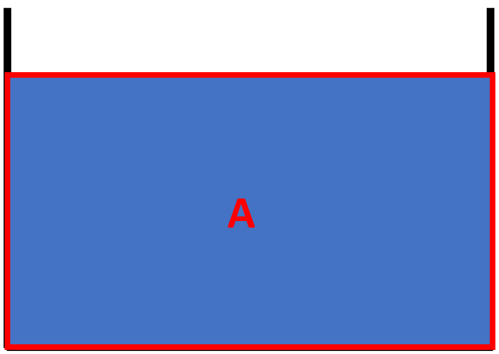
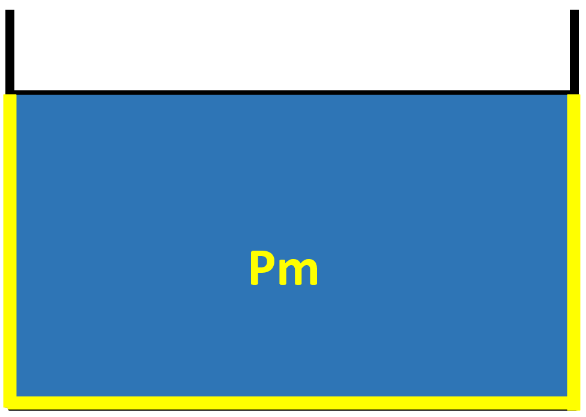
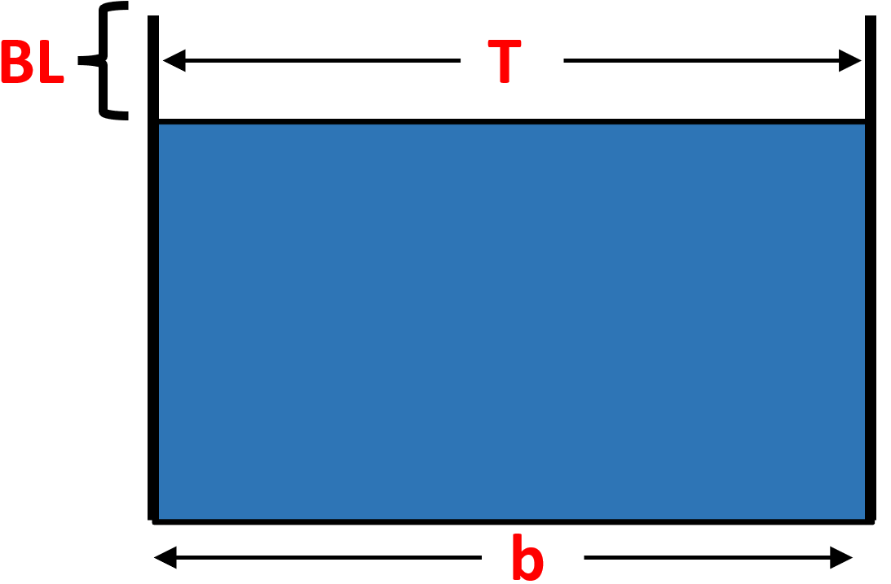
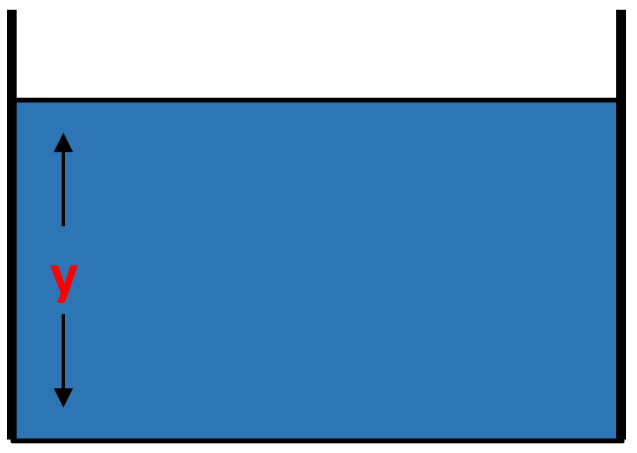
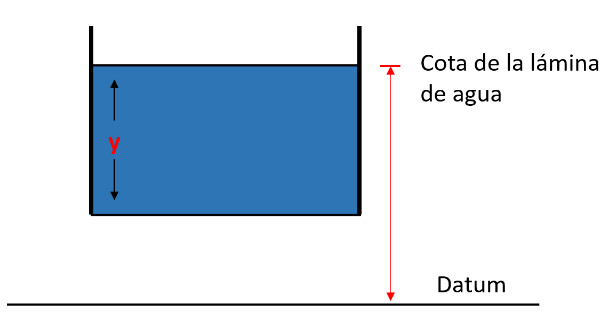

Área (A)
Es el área mojada o área de la sección transversal del flujo, perpendicular a la dirección de flujo. Ejemplo para un canal rectangular.

Perímetro mojado (Pm)
Es la longitud de la línea de intersección de la superficie de canal mojada y de un plano transversal perpendicular a la dirección de flujo.

Radio hidráulico (Rh)
Es la relación del área mojada con respecto a su perímetro mojado
Ancho superficial (T)
Es el ancho de la sección del canal en la superficie libre.

Profundidad hidráulica (D)
Es la relación entre el área mojada y el ancho en la superficie:
Equivale a la profundidad que tendría el agua si la sección fuera rectangular y conservara tanto el área como el ancho en la superficie.
Profundidad de flujo (y)
Es la distancia vertical desde el punto más bajo de una sección del canal hasta la superficie libre.

Cota
Es la elevación o distancia vertical desde un nivel de referencia hasta la superficie libre.
